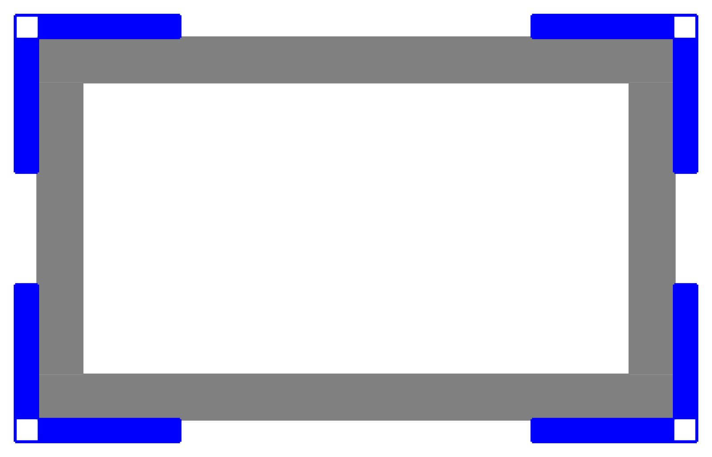
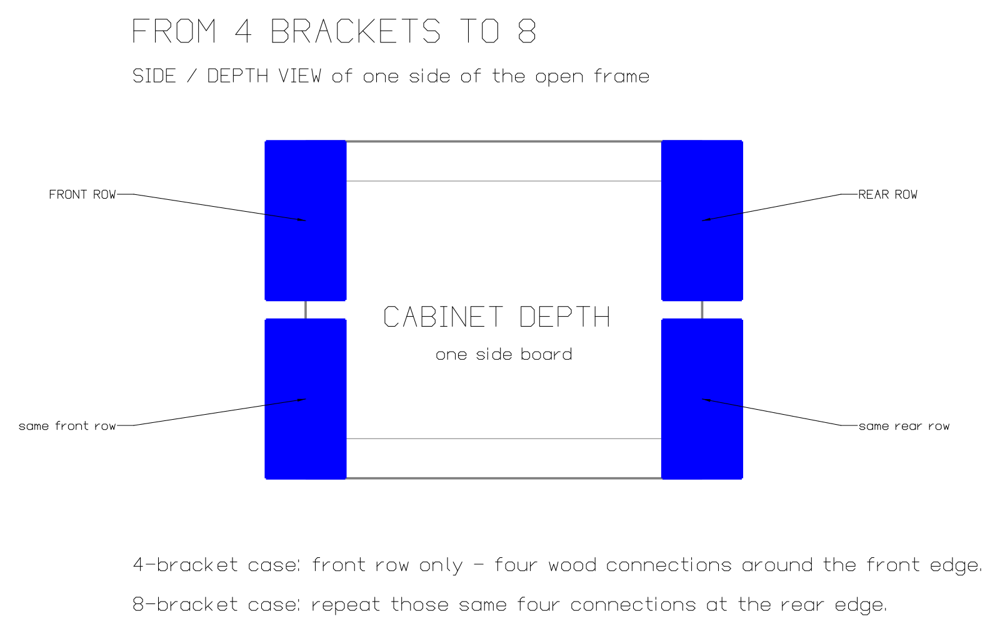
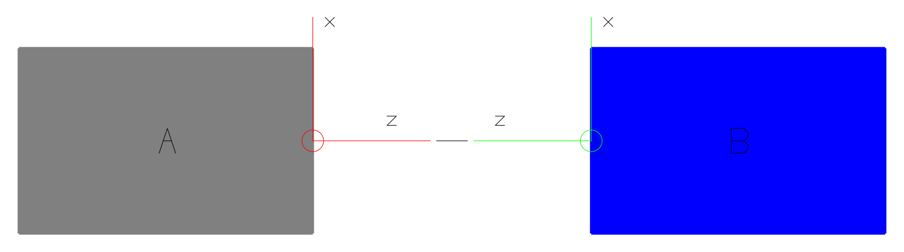
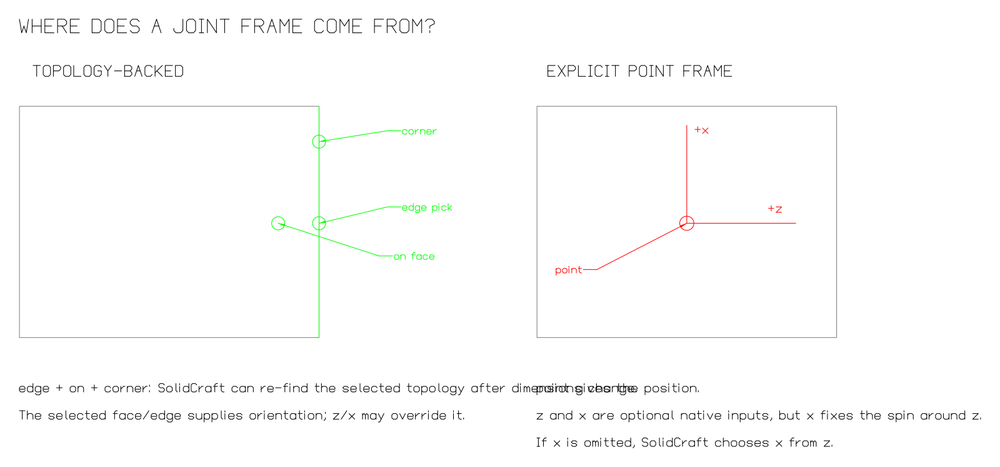

Native CAD concept first
Placing a corner bracket with Forge
Goal: one short, readable Forge expression that tells SolidCraft exactly how a reusable corner bracket is attached — without raw direction vectors in normal model code and without a second orientation solver in Forge.
1. Start with the real construction
The qualification use case is an open wooden frame. A neutral
CornerBracket connects a side board to the top or bottom board.
One bracket at each side-to-top/bottom connection on the front edge.
Repeat exactly the same four connections at the rear edge.
One true corner component on all eight corners of a box.
Front view: the brackets are outside the wood frame

Depth view: four becomes eight

The bracket itself knows only its own local geometry. It does not know left/right, top/bottom, front/rear or the dimensions of the cabinet. The assembly chooses those placements.
2. What SolidCraft actually needs
A SolidCraft joint connects two joint origins: origin A on the parent and origin B on the child. A joint origin is more than a point. It identifies a position and a local frame at that position.

| Information | Meaning |
|---|---|
occurrence | Which placed component this joint origin belongs to. |
| reference | Where on it: face, circle, edge/corner, plane, axis or explicit point. |
z | The local z direction: which way the joint origin faces. |
x | The local x direction: fixes the remaining spin around z. |
| joint relation | Rigid, planar, revolute, etc., plus native offset/angle/values. |
Conceptual API object
This is not the SolidCraft command format. It is only a readable way to explain the information in one explicit point-based joint origin:
{
"joint_origin": {
"name": "bracket_mount",
"point": [0, 0, 0],
"z_direction": [0, -1, 0],
"x_direction": [1, 0, 0],
"y_direction": "derived from x and z"
}
}Only two directions need to be supplied. Together, x and z fix the
local frame; the remaining perpendicular direction follows from them.
The real SolidCraft JSON generated today
For the current bracket fixture Forge emits a real joint.create command like this:
{
"command": "joint.create",
"params": {
"type": "rigid",
"name": "Attach LBracket:1 to FrameBlock:1",
"a": {
"occurrence": "FrameBlock:1",
"edge": [-60, -40, 30],
"on": [0, -40, 30],
"corner": [-60, -40, 60]
},
"b": {
"occurrence": "LBracket:1",
"point": [-60, -40, 60],
"z": [0, -1, 0],
"x": [1, 0, 0]
},
"angle": 0
}
}edge + on + corner selects real topology. SolidCraft can keep that selection associated with changing geometry.point + z + x explicitly supplies the child joint origin and its orientation.[0,-1,0] and [1,0,0].3. Where does the joint-origin frame come from?

Parent A: topology-backed
The frame side can use a real face/edge/corner. For an edge/corner origin SolidCraft derives its frame from the selected geometry and keeps the topology by name, so it can follow dimension changes.
Child B: explicit point frame
The current fixture chooses a point on the bracket and supplies z and
x. If a point origin omits x, SolidCraft chooses x from z alone,
so a part that was deliberately spun around z can turn back when joined.
Calling B a “local reference” is too vague. On this page we use the precise term child joint origin.
4. What the current Forge code is doing
The current fixture first defines the child joint origin in Python:
bracket_corner = AnchorFrame(
origin=(0, 0, 0),
z=(0, -1, 0),
x=(1, 0, 0),
)and then uses it in the assembly:
bracket.copy().attach(
frame,
parent=Anchor.FRONT_TOP_LEFT,
child=bracket_corner,
angle=0,
)The problem is not that these values are wrong as low-level data. The problem is that ordinary model code has to understand and spell SolidCraft's basis vectors directly. The numbers do not explain their intent.
5. Requirements for the Forge API
- The generated data must map directly to SolidCraft's own joint-origin information. No second orientation solver in Python.
CornerBracketmust remain independent of the cabinet: no left/right, top/bottom, front/rear or cabinet dimensions.- Forge must not guess orientation from a class name or from bracket geometry.
- Normal model code should not require raw vectors such as
z=(0,-1,0)andx=(1,0,0). - The low-level vector representation may remain available for genuinely low-level use.
- The solution is qualified first with four brackets, then eight, then a true 3D corner component.
6. Qualification order
| Case | What it proves |
|---|---|
| 4 brackets | The same neutral bracket works at all four front side-to-top/bottom connections. |
| 8 brackets | The same bracket and same child joint-origin definition also work at the rear edge. |
| Resize | Width, height and depth changes are re-solved from native references without rerunning Python. |
| 3D corner | Only after the above: one true corner component on all eight box corners. |